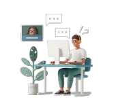

Design Process
Research & requirement gathering
To efficiently learn about the current scenario, I used these methods:
Business Analysis
Developing service blueprint to visualizing user touch points & their journey, highlighting potential
areas of improvement.
Internal Research
Engaging with management & medical team to align objectives,ensuring a holistic understanding from
healthcare professionals.
Business Analysis
Developing service blueprint to visualizing user touch points & their journey, highlighting potential
areas of improvement.
Age
Majority of our users are popmoms/young mothers, aged 25-35 with 1-2 infants.
Traits
Typically well-educated, affluent professionals valuing convenience & tech-savvy.
Exceptation
A user-friendly & trustworthy app that's reliable and provides accurate information.
What do Our Users Feel?
Payment Options
Need for diverse & flexible payment options,especially for high-cost vaccinations.
"I wish there were more flexible payment plans, like I can split the payment with my credit card."
"Why can't I use digital wallets? It would be so much easier!"
Re-registration donderns
They need a smoother, efficient vaccinatio registration for easy data access.
"It's tedious to fill out the forms every single time. Don't you have a system to track our vaccination
history?"
"I've used imuni 6 times, why isn't there an option to use my vaccination record?"
Tridky sdheduling
Struggling with scheduling, they seek Clearer appointment details.
"My preferred time often changes to match the doctor's availability. It would be better if I only get
truly available slots."
"Why wasn't I informed earlier that my area isn't covered by imuni services?"
Communidating diffidulties
Preferring simplicity, they want A single Channel to contact all imuni representative.
"I get calls from multiple numbers. This is confusing, isn't there a unified number for every department
at imuni?"
"Each doctor has their own contact, it's tough to keep track every contacts."
New customer journey in our app
There haven't been significant changes to our well-established customer journey. However,
as we transitioned from manual to automated systems, we've made some minor adjustments:

Streamlined vac registration

Improved communication
More flexiable payments
Vac reports for patients
Others Impacts
The impacts of our initiative to create an integrated digital system, consisting of a mobile app for users
and a back-office web for our team, are as follows:
1. Better onboarding
Faster and user-friendly new user registration, leading to rapid growth of our users & orders.

2. Efficient order processing
Centralized vaccination records, reducing errors & data loss.

3. Scalability
Designed for our growing user base & order volume, this system able to provides support for our expanding
operations efficiently.
4. Data-Informed decision making
Designed for our growing user base & order volume, this system able to provides support for our expanding
operations efficiently.
Things I've learned from this project
1. Interdisciplinary collaboration
I learned effective interdisciplinary communication, especially about the value of diverse expertise collaboration.
2. Alignment with developers
I gained insights into collaborating with the tech team, emphasizing the significance of aligning goals and perspectives to ensure project quality(
3. Efficient customer journey
I learned how to design streamlined & flexible user flows optimizing our customer journey for diverse scenarios.